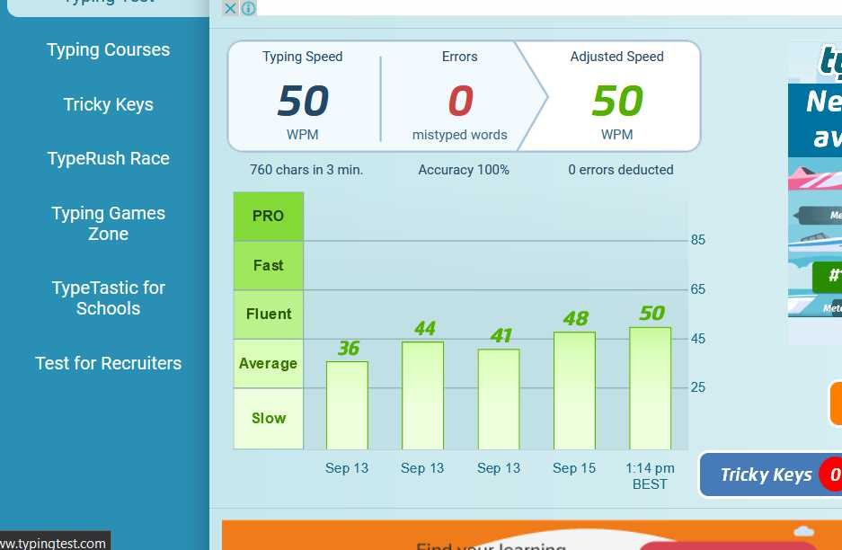

I have a good typing speed of 40wpm.
Along with it I have a good grasp on MS office softwares especially MS Excel and Word.
Below is a screenshot of a typing test. The speed is 50 without any error as I have practiced the same piece of text many times. But my typing speed for some random text is 40wpm with almost 0 errors.
Along with it I have a good grasp on MS office softwares especially MS Excel and Word.
Below is a screenshot of a typing test. The speed is 50 without any error as I have practiced the same piece of text many times. But my typing speed for some random text is 40wpm with almost 0 errors.
